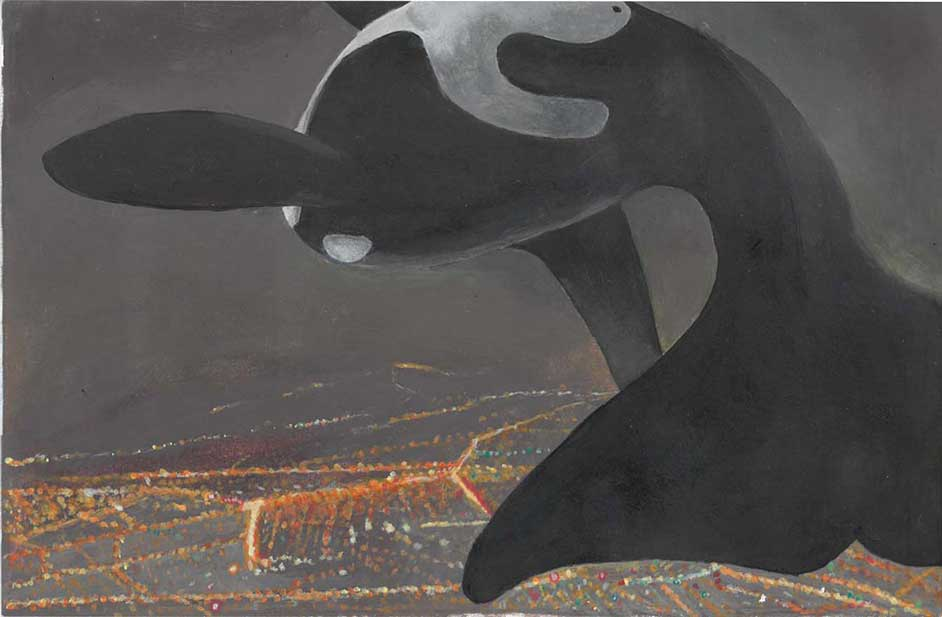

Welcome to my level 2 portfolio site
This year we had to complete a portfolio consisting of two boards of paintings. The first step was choosing animals, objects, and themes or ideas to follow for our boards.
For my animals I chose to use the red panda and the barn owl and for my objects I chose, an hourglass, a pocket watch, a crucifix/cross, gravestones, and a box or coffin.
We then did multiple media studies of our animals. Using charcoal, water colour, acrylic paint, Indian ink, chalk pastels and oil pastels.
Once those were finished, we did 4 good copy pencil drawings to go on our boards. I had one with my animals, multiple self portraits all together on one page, and two pieces with my objects. These went at the top of our boards.
After this we came up with as many compositions as we could, by combing all our animals and objects together with our themes (if we had one).
We then chose multiple Artists that we liked and that we wanted to try to emulate the style of, in our portfolio. I chose Shaun Tan, Josh Keyes, and Meghan Howland. We chose one of these artists to do an artist model copy of, Shaun Tan for me, which would be used on our board.
All our paintings had to use the objects and animals we had chosen, while using techniques and ideas we like from our artist models.